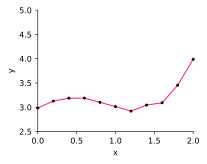
Question: What if we want a smoother approximation?
\[ \begin{aligned} y &= 2.98 +16.90x -219.77x^{2} +1198.07x^{3} -3518.54x^{4}+6194.09x^{5} \\ &-6846.49x^{6} +4787.40x^{7} -2053.91x^{8} +492.90x^{9} -50.61x^{10} \end{aligned} \]
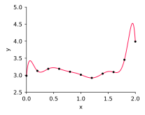
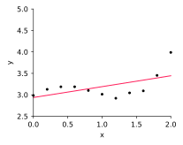
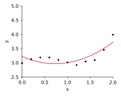
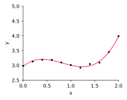
\[ \begin{aligned} b_0 + b_1 x_0 + b_2 x_0^2 + \ldots + b_n x_0^n &=& y_0 \\ b_0 + b_1 x_1 + b_2 x_1^2 + \ldots + b_n x_1^n &=& y_1 \\ & \vdots & \\ b_0 + b_1 x_n + b_2 x_n^2 + \ldots + b_n x_n^n &=& y_n\end{aligned} \]
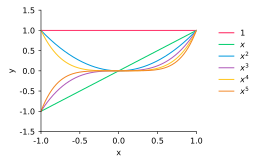
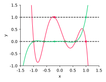
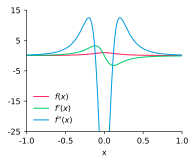
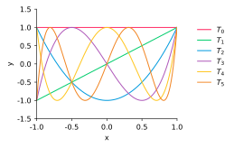
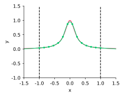
\[ p_i''(x_{i-1})=\frac{- 4 k_{i-1} - 2 k_{i}}{\Delta{x}_i} + \frac{6 \Delta{y}_i}{\Delta{x}_i^{2}} \] \[ p_i''(x_i)=\frac{2 k_{i-1} + 4 k_{i}}{\Delta{x}_i} - \frac{6 \Delta{y}_i}{\Delta{x}_i^{2}} \]
\[ \frac{1}{\Delta{x}_i} k_{i-1} + \left(\frac{2}{\Delta{x}_i} + \frac{2}{\Delta{x}_{i+1}}\right) k_{i}+ \frac{1}{\Delta{x}_{i+1}} k_{i+1} =\left(\frac{3 \Delta{y}_i}{\Delta{x}_i^{2}} + \frac{3 \Delta{y}_{i+1}}{\Delta{x}_{i+1}^{2}}\right) \] ($n-1$ conditions)
\[ \begin{aligned} u_n &= d_n / b_n \\ u_i &= (d_i - c_i u_{i + 1}) / b_i \quad \text{for}\;i=n-1,\ldots,0 \end{aligned} \]
where last line follows from $y^T A b = (y^T A b)^T$, since $y^T A b \in \mathbb R$
\[ \implies \nabla(b^T M b) = M b + M^T b \]
\[ A^T A b = A^Ty \]
\[ \|r(b_\text{lstsq})\|_2= \|y - A b_\text{lstsq}\|_2 = 8.00\times 10^{-9} \]
\[ \|r(b_\text{normal})\|_2 = \|y - A b_\text{normal}\|_2 = 1.09\times 10^{-8} \]
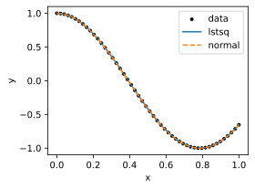
\[ f_n(x;b) = b_{-n} e^{-nx}+b_{-n+1} e^{(-n+1)x}+ \ldots+ b_0+ \ldots+ b_{n} e^{nx} \]
\[ T(x) = x + \lambda \]
\[ T(x) = \lambda x \]
\[ \left[ \begin{array}{c} ~~~~~~~~~~~~~~~~~~~~~~~~~~~~~~~~\\ ~~~~~~~~~~~~~~~A~~~~~~~~~~~~~~~~\\ ~~~~~~~~~~~~~~~~~~~~~~~~~~~~~~~~\\ \end{array} \right] \left[ \begin{array}{c} ~\\ \\ \\ b\\ \\ \\ \\ \end{array} \right] = \left[ \begin{array}{c} ~\\ y\\ \\ \end{array} \right] \]
| minimize | $b^T b$ |
| subject to | $Ab = y$ |
numpy.lstsq
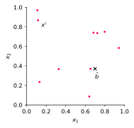
\[ \left\{ J_r(b) \right\}_{ij} = \frac{\partial r_i(b)}{\partial b_j} \]
\[ \begin{aligned} \frac{\partial F_i}{\partial b_j} &= \frac{\partial }{\partial b_j} \left(J_r(b)^T r(b)\right)_{i} \\ &= \frac{\partial}{\partial b_j}\sum_{k=1}^m \frac{\partial r_k}{\partial b_i} r_k \\ &= \sum_{k=1}^m\frac{\partial r_k}{\partial b_i} \frac{\partial r_k}{\partial b_j} + \sum_{k=1}^m \frac{\partial^2 r_k}{\partial b_i\partial b_j} r_k\end{aligned} \]
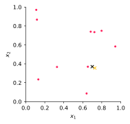
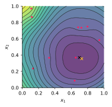
\[ \phi(\htmlClass{color4}{ \times}) = 0.0044 < 0.0089 = \phi(\times) \]
$\htmlClass{color4}{ \times}$ is our best-fit to the data, $\times$ is the true transmitter location